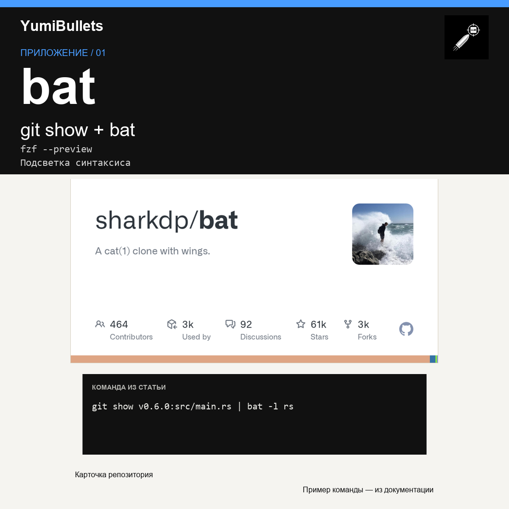

bat: как заменить cat и увидеть код в цвете
Нужно быстро прочитать код в терминале и заметить изменения? По README проекта, bat добавляет к выводу cat подсветку синтаксиса и интеграцию с Git. Разберём команды из этой…

Нужно быстро прочитать код в терминале и заметить изменения? По README проекта, bat добавляет к выводу cat подсветку синтаксиса и интеграцию с Git. Разберём команды из этой…